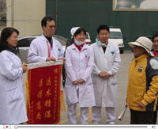
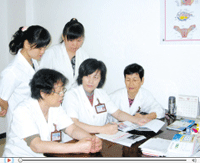
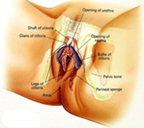
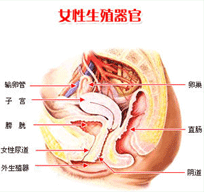

1 2012首届“国际外阴白斑科研与技术成果”
日前，在世界卫生组织大力支持下，由国际妇科病防治协会、国际女性健 康理事...【查看全文】
LEK细胞因子激融修复治疗体系，是贵州武警总队医院综合生物基因学、免疫学、遗传学、细胞学、纳米药理学等多门基础学科，从外阴白斑的致病根源入手，专门研制的一种针对性治疗技术。该技术将西医的高科技诊疗科技和中医博大、精妙、灵活多变的配伍相结合，全面解决了外阴白斑治疗过程中用药单一，有效率低和不能治愈的问题，而且彻底激活免疫体系，构建起一道稳固的免疫防御网，有效杜绝了外阴白斑疾病的复发，从而阻断了癌变。该技术相继通过了美国FDA、中华医学会、世界卫生组织、国际(WPA)认证等权威机构认证。
由于外阴白斑发病部位的特殊性和复杂性，不少女性往往有苦难言。外阴白斑不仅让女性产生自卑心理，破坏性生活情绪，还会在饱受瘙痒、外阴疼痛等折磨,让患者痛苦不堪。我院采用“美国LEK细胞因子激融修复技术”对战外阴白斑，让众多女性重拾幸福生活。【详情咨询在线专家】
一个个真实的文字记录，令人感动的康复之语——以下病例系真人真事（已征得患者同意本院使用-未经许可，严禁转载！）
-
李香芸
遗传性外阴白斑 40岁点击进入
这是一段不为人知的经历，这是一起苦不堪言的心事，这是一种让...[详细]
-
唐秋
苔藓型阴白斑 52岁点击进入
得不到儿女的理解，身体承受着疾病的煎熬，这是老年人所面临...[详细]
-
林夏莲
萎缩型外阴白斑 48岁点击进入
更年期，对女性来说是一个比较煎熬的过度阶段，工作，家庭琐事都...[详细]
-
张女士
混合型外阴白斑 55岁点击进入
如果不是因为一次网络查阅，如果不是因为选择了贵州武警总队医院..[详细]
-
柳雪晴
苔藓硬化型外阴白斑 24岁点击进入
24岁，一个美丽年华，一段花的岁月，一段绚丽的风景...[详细]
-
赵丽
增生型外阴白斑 20岁点击进入

他算一个在校大学生，入选学校年度优秀榜单，他算一个乐观...[详细]
-
陈彩霞
萎缩型外阴白斑 41岁点击进入

临近新春，本该是值得欢庆的日子，然而在陈彩霞的心里...[详细]
-
方晓田
遗混合型外阴白斑 40岁点击进入
我们每个人都会遭遇疾病，不同的是，现在或未来...[详细]
- 
- 
1 外阴白斑怎么得的
外因白斑怎么得的？外阴白斑又名“外阴营养不良”，实际上是指外阴局部神经与血管营养障碍引起的组织变性与色素改变的疾病。很多患者患上该疾病后，都会在不同程度上表现出外阴瘙痒难忍、脱屑、弥漫性白色斑块、失去弹性，甚至萎缩破溃，有疼痛及烧灼感......[详情]
- 2013-12-17外阴瘙痒有白色是什么病？
- 2013-12-17外阴白斑的日常护理和饮食。
- 2013-12-17外阴白斑会不会遗传下一代？
- 2013-12-17得了外阴白斑如何过性生活？
- 2013-12-17外阴白斑会影响生育吗？
- 2013-12-17外阴白斑会不会传染？
- 2013-12-17治疗外阴白斑的网上咨询步骤。
- 2013-12-17贵州治疗外阴白斑最好的医院。
- 2013-12-17外阴瘙痒有白色是什么病？
- 2013-12-17外阴白斑的日常护理和饮食。
- 2013-12-17外阴白斑会不会遗传下一代？
- 2013-12-17得了外阴白斑如何过性生活？
- 2013-12-17外阴白斑会影响生育吗？
- 2013-12-17外阴白斑会不会传染？
- 2013-12-17治疗外阴白斑的网上咨询步骤。
- 2013-12-17贵州治疗外阴白斑最好的医院。
- 1什么是外阴白斑？
- 2外阴白斑怎么治疗？
- 3外阴白斑如何检查诊断
- 4外阴白斑会遗传吗？
- 5外阴白斑会传染吗？
- 6治疗外阴白斑的药物有哪些？
- 7为什么外阴白斑反复发病？
- 8外阴白斑可以要孩子吗？
- 9外阴白斑能治好吗？
- 10外阴白斑治疗方法
- 11外阴白斑最新治疗方法
- 12外阴白斑有哪些危害？
- 13治外阴白斑需要多少钱？
- 14外阴白斑是什么引起的？
- 15外阴白斑的误区有哪些？
- 16外阴白色病变
- 17什么是外阴营养不良？
- 18外阴瘙痒怎么办？
- 19外阴白斑的症状？
- 20外阴萎缩怎么办？